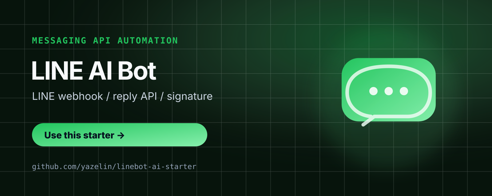

LINE 官方帳號自動化
LINE Bot AI 入門模板
把 LINE 官方帳號或群組變成可接 AI、可接資料、可部署的工作流入口。
台灣使用者習慣在 LINE 裡完成溝通，這個模板讓 AI 應用直接進入大家每天使用的入口。

把 LINE 官方帳號或群組變成可接 AI、可接資料、可部署的工作流入口。
台灣使用者習慣在 LINE 裡完成溝通，這個模板讓 AI 應用直接進入大家每天使用的入口。

公開教學已經放在 GitHub 與網頁版；留下 email，我會寄送更新、小班工作坊通知、實戰 Q&A 與進階範例。
這個範本由 林亞澤（Yaze Lin） 維護 — 出身機電自動化系統整合，現在把同一套工程方法用在 AI 產品上。
你正在看的 LINE Bot 範本，正式上線版就是 CTOS-Lite / CT JINN。
想把這個範本落地成你公司的內部系統，或想上一堂從 0 到部署的課？來信 yazelin@ching-tech.com。